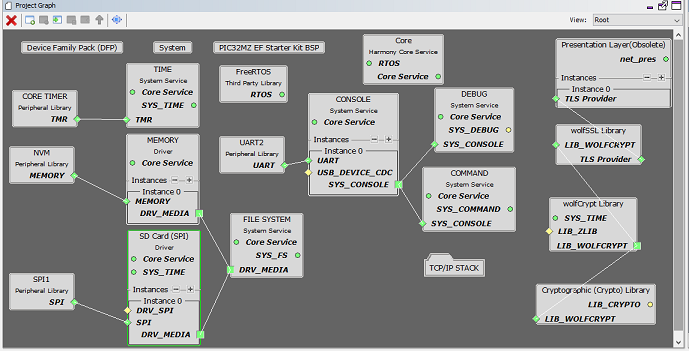
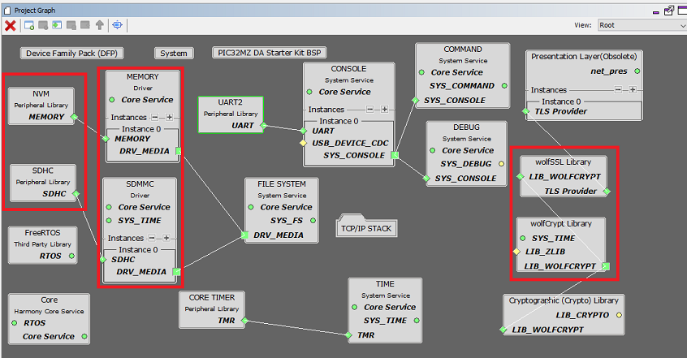
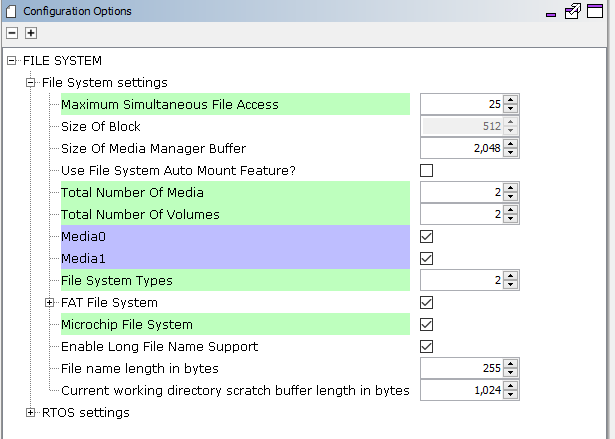
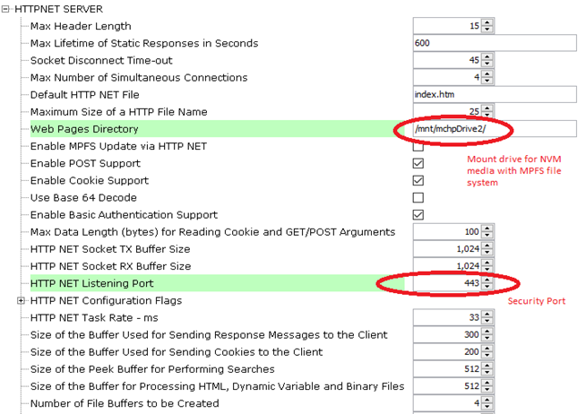

The Web and FTP Server configuration demonstrates creating an application where HTTP web server will use MPFS FS with NVM media and FTP server will use FAT FS with SDCARD as media.
The Non-Volatile Memory (NVM) Microchip Proprietary File System (MPFS) is used for storing the web pages in the internal Flash.
The FAT FS File System is used for storing any type of files and FTP server will read from and write to this FS.
TCP/IP WEB-NET & FTP Server MHC Configuration
The following Project Graph diagram shows the Harmony components included in the application demonstration.
MHC is launched by selecting Tools > Embedded > MPLAB® Harmony 3 Configurator from the MPLAB X IDE and after successful database migration , TCP/IP demo project is ready to be configured and regenerated.

TCP/IP Root Layer Project Graph
PIC32MZ EF Device performs read/write to an SD card using SDSPI Module
SDSPI module is selected with SPI peripheral.
SDSPI driver uses an instance of the SPI driver to communicate to the SD card over the SPI bus.
The TCP/IP application demonstrates FAT file system to read/write to an SD card using SDSPI driver. FTP application use SPI peripheral to read/write from SDMMC module.
PIC32MZ DA device performs read/write to an SD card using SDMMC driver. FTP application use SDMMC driver to read/write from SDHC peripheral module.
Wolfssl crypto module enabled with MD5,SHA authentication. Wolfssl library used a open a secured socket.

FreeRTOS component is required for RTOS application. For bare-metal (non-RTOS) FreeRTOS component should not be selected.
Both MPFS and FAT File System Configuration
TCP sockets calculate the ISN using the wolfSSL crypto library.
TCP/IP Required Application
TCP/IP demo use these application module components for this demo.
Announce module to discover the Microchip devices within a local network.
DHCP Client module to discover the IPv4 address from the nearest DHCP Server.
HTTPNET module is selected to run the web_server for the port number 443.
FTP SERVER an application layer protocol that facilitates uploading of files to, and downloading of files from, an embedded device.

HTTPNET server with Web directory Mount path and Security port number configuration:
Http Server module use the NVM mount path with MPFS files system. Also HTTP server module use the secured port number 443.
FTP server use the FAT FS to access files from SDCARD.

TCPIP Driver Layer
Internal ethernet driver(ethmac) is enabled with the external LAN8740 PHY driver library. The MIIM Driver supports asynchronous read/write and scan operations for accessing the external PHY registers and notification when MIIM operations have completed.

TCP/IP WEB-NET and FTP Server Hardware Configuration
This is the following section describes the hardware configuration and one of the configuration can be used for this application demonstration.
- 1.
This section describes the PIC32MZ EF Device hardware configuration with SDMMC(Secure Digital/ MultiMediaCard interface) interface.

Refer to the PIC32MZ EF Starter Kit User Guide
Refer to the Starter Kit I/O Expansion Board - DM320002 User Guide
Refer to the SDMMC PICtail daughter board - AC164122 User Guide
Insert the SDMMC PICtail daughter board (AC164122) into the SPI1 slot of the I/O Expansion Board (DM320002)
Insert the PIC32MZ EF Starter Kit into the I/O Expansion Board (DM320002)
Establish a connection between the router/switch with the PIC32MZ Starter Kit through the RJ45 connector on PHY daughter board. Power the board using the 9V power adapter
The demo application is configured for the SPI1 slot, using the following I/O pins:
SPI 1 Pin Selection SCK1 - SPI clock RD1 SDI1 - SPI Data Input RD14 SDO1 - SPI Data Output RD10 SPI Chip Select RB1
- 2.
This section describes the PIC32MZ DA device default hardware configuration use USB device as on board debugger and programmer for this application demonstration.
Refer to the PIC32MZ DA Ethernet Starter Kit User Guide for the programming/debugging options supported.

No hardware related configuration or jumper setting changes are necessary. Connect the mini USB cable from the computer to the USB DEBUG connector on the PIC32MZ DA Ethernet Starter Kit
Connect micro USB cable from the computer to the USB connector(J4) on the PIC32MZ DA Starter Kit
Connect micro USB cable from the computer to the USB-UART connector(J5) on the PIC32MZ DA Starter Kit
Establish a connection between the router/switch with the PIC32MZ DA Starter Kit through the RJ45 connector on PHY daughter board.
Insert MicroSD Card in the MicroSD Card slot (J10) on the development board
TCP/IP WEB-NET & FTP SERVER Running Application
This application uses more than one FS for the TCP/IP application demonstration. Here HTTP Net server uses Microchip Proprietary File System (MPFS) as a read only FS. Here MPFS FS reads web pages from Non-Volatile Memory (NVM) media which is used to store the web server pages.
The FAT FS File System read and writes to SDCard memory media which is used for storing any type of files. FTP server will read from and write to this SDcard media using FAT FS.
This table list the name and location of the MPLAB X IDE project folder for the demonstration.
| Project Name | Target Device | Target Development Board | Description |
|---|---|---|---|
| pic32mz_ef_sk_freertos.X | PIC32MZ2048EFH144 | PIC32MZ EF Starter Kit | Demonstrates the TCP/IP Web Server with more than one FS on a development board with PIC32MZ2048EFH144 device and on-board KSZ8091 PHY. This implementation is based on FreeRTOS. |
| pic32mz_da_sk.X | PIC32MZ2064DAS169 | PIC32MZ DA Starter Kit | Demonstrates the TCP/IP Web Server with more than one FS on a development board with PIC32MZ2064DAS169 device and on-board LAN8740 PHY. This implementation is based on bare-metal(non-RTOS). |
| pic32mz_da_sk_freertos.X | PIC32MZ2064DAS169 | PIC32MZ DA Starter Kit | Demonstrates the TCP/IP Web Server with more than one FS on a development board with PIC32MZ2064DAS169 device and on-board LAN8740 PHY. This implementation is based on FreeRTOS. |
- 1.
Ensure a microSD/SD card is formatted and loaded with the web pages provided within the < install-dir >/net/apps/web_ftp_server_mpfs_fatfs/firmware/src/web_pages directory.
Running Demonstration Steps
- 1.
Build and download the demonstration project on the target board.
- 2.
If the board has a UART connection:
- a.
A virtual COM port will be detected on the computer, when the USB cable is connected to USB-UART connector.
- b.
Open a standard terminal application on the computer (like Hyper-terminal or Tera Term) and configure the virtual COM port.
- c.
Set the serial baud rate to 115200 baud in the terminal application.
- d.
See that the initialization prints on the serial port terminal.
- e.
When the DHCP client is enabled in the demonstration, wait for the DHCP server to assign an IP address for the development board. This will be printed on the serial port terminal.
Alternatively: Use the Announce service or ping to get the IP address of the board.
Run tcpip_discoverer.jar to discover the IPv4 and IPv6 address for the board.
- a.
- 3.
Execution:
An HTTP server is hosted by the demonstration application. Open a web browser and direct it to the board running the HTTP server by typing the URL in the address bar (for example, https://mchpboard_c), and then pressing Enter.
The demonstration application features following:
Real-time Hardware Control and Dynamic Variables - On the Overview page the LEDs can be clicked to toggle the LEDs on the Microchip hardware development board. The SWITCHes on the Microchip hardware development board can be pressed to toggle the Buttons on the web page. The dynamic variables can be updated in real-time on the HTTP server.
Note: For the LED and SWITCH functionality portion of the demonstration, configure the GPIOs connected to LEDs and Switches on Microchip hardware development board, through the Pin Configuration manager in MPLAB® Harmony Configurator (MHC).
- a.
Form Processing - Input can be handled from the client by using the GET and POST methods (this functionality controls the on-board LEDs and is operational only on the Explorer 16 Development Board)
- b.
Authentication - Shows an example of the commonly used restricted access feature
- c.
Cookies - Shows an example of storing small text strings on the client side
- d.
Server Side Includes - An example of how SSI can be used to support dynamic content
- e.
File Uploads - Shows an example of a file upload using the POST method. The HTTP server can_accept_a user-defined MPFS/MPFS2 image file for web pages.
- f.
Send E-mail - Shows simple SMTP POST methods
- g.
Dynamic DNS - Exercises Dynamic DNS capabilities
- h.
Network Configuration - The MAC address, host name, and IP address of the evaluation kit can be viewed in the Network Configuration page and some configurations can be updated
- i.
MPFS Upload - A new set of web pages can be uploaded to the web server using this feature, which is accessed through http://mchpboard_c/mpfsupload
Notes: The location of the MPFS image is fixed at the beginning of the Flash page specified by DRV_MEMORY_DEVICE_START_ADDRESS. The size of the MPFS upload is limited to DRV_MEMORY_DEVICE_MEDIA_SIZE in the demonstration. The HTTP File Upload functionality has to be enabled when the project is generated.

- a.
- 4.
FTP Server output -
Also to transfer file , FTP output –
Open windows command console and enter FTP server IP address (here FTP server IP address - 192.168.100.11) to access the FTP SERVER
FTP OUTPUT C:>ftp 192.168.100.11 Connected to 192.168.100.11. 220 Ready User (192.168.100.11:(none)): Microchip 331 Password required Password: 230 Logged in ftp> pwd 257 "/" is cwd ftp> dir 200 Command Ok 125 File status okay; about to open data connection -rwx------ 0 0 0 36 Aug 09 2013 file.txt -rwx------ 0 0 0 12 Aug 09 2013 file1.txt drwx------ 0 0 0 0 Feb 25 2019 System Volume Information -rwx------ 0 0 0 24 Aug 09 2013 file_hs.txt -rwx------ 0 0 0 12 Aug 09 2013 file_hs3.txt -rwx------ 0 0 0 468 Aug 09 2013 file_hs5.txt -rwx------ 0 0 0 42077 Aug 09 2013 Presentation1.pptx drwx------ 0 0 0 0 Jul 16 2019 ATE_EtherCAT_Demo -rwx------ 0 0 0 9287357 Jul 17 2019 ATE_EtherCAT_Demo.7z drwx------ 0 0 0 0 Jul 17 2019 Dell_Laptop_bakcup -rwx------ 0 0 0 979594 Dec 03 2019 IoT Demo.pptx drwx------ 0 0 0 0 Dec 10 2019 wifi_rgb_easy_configuration drwx------ 0 0 0 0 Nov 14 2019 wireless drwx------ 0 0 0 0 Nov 26 2019 test_bypass_http_net_server -rwx------ 0 0 0 8186726 Nov 27 2019 test_bypass_http_server_1.zip drwx------ 0 0 0 0 Jan 30 2020 FOE_BinFIle drwx------ 0 0 0 0 Jan 31 2020 FoE_Hex_imagefiles drwx------ 0 0 0 0 Mar 16 2020 exam drwx------ 0 0 0 0 Jun 02 2020 webpages -rwx------ 0 0 0 525 Jun 09 2020 New Volume (D) - Shortcut.lnk 226 Closing data connection. Requested file action successful. ftp: 1424 bytes received in 0.20Seconds 7.19Kbytes/sec. ftp> cd webpages 250 /webpages/ is new cwd ftp> dir 200 Command Ok 125 File status okay; about to open data connection drwx------ 0 0 0 0 Jun 02 2020 dyndns drwx------ 0 0 0 0 Jun 02 2020 email drwx------ 0 0 0 0 Jun 02 2020 protect drwx------ 0 0 0 0 Jun 02 2020 snmp -rwx------ 0 0 0 1388 May 03 2019 auth.htm -rwx------ 0 0 0 2104 Feb 11 2020 cookies.htm -rwx------ 0 0 0 1986 Feb 11 2020 dynvars.htm -rwx------ 0 0 0 161 Feb 11 2020 footer.htm -rwx------ 0 0 0 2068 Feb 11 2020 forms.htm -rwx------ 0 0 0 2150 Feb 11 2020 harmony.gif -rwx------ 0 0 0 1232 Feb 11 2020 header.htm -rwx------ 0 0 0 3798 Feb 11 2020 index.htm -rwx------ 0 0 0 21 Feb 11 2020 leds.cgi -rwx------ 0 0 0 3183 Feb 11 2020 mchp.css -rwx------ 0 0 0 1263 Feb 11 2020 mchp.gif -rwx------ 0 0 0 3721 Feb 11 2020 mchp.js -rwx------ 0 0 0 512 Feb 11 2020 snmp.bib -rwx------ 0 0 0 2032 Feb 11 2020 ssi.htm -rwx------ 0 0 0 183 Feb 11 2020 status.xml -rwx------ 0 0 0 970 Feb 11 2020 upload.htm 226 Closing data connection. Requested file action successful. ftp: 1267 bytes received in 0.17Seconds 7.45Kbytes/sec. ftp> get mchp.css 200 Command Ok 150 File status okay; about to open data connection 226 Transfer Complete ftp: 3183 bytes received in 1.42Seconds 2.24Kbytes/sec. ftp> put ActivityLog.xml 200 Command Ok 150 File status okay; about to open data connection 226 Transfer Complete ftp: 86262 bytes sent in 0.56Seconds 152.68Kbytes/sec. ftp> ls 200 Command Ok 125 File status okay; about to open data connection Date Type FileSize filename 05-03-2019 11:54:24 file 1388 auth.htm 02-11-2020 16:47:38 file 2104 cookies.htm 02-11-2020 16:47:38 file 1986 dynvars.htm 02-11-2020 16:47:38 file 161 footer.htm 02-11-2020 16:47:40 file 2068 forms.htm 02-11-2020 16:47:40 file 2150 harmony.gif 02-11-2020 16:47:40 file 1232 header.htm 02-11-2020 16:47:40 file 3798 index.htm 02-11-2020 16:47:42 file 21 leds.cgi 02-11-2020 16:47:42 file 3183 mchp.css 02-11-2020 16:47:42 file 1263 mchp.gif 02-11-2020 16:47:42 file 3721 mchp.js 02-11-2020 16:47:44 file 512 snmp.bib 02-11-2020 16:47:46 file 2032 ssi.htm 02-11-2020 16:47:46 file 183 status.xml 02-11-2020 16:47:46 file 970 upload.htm 08-09-2013 15:06:00 file 86262 ActivityLog.xml 226 Closing data connection. Requested file action successful. ftp: 799 bytes received in 0.16Seconds 4.99Kbytes/sec. ftp>